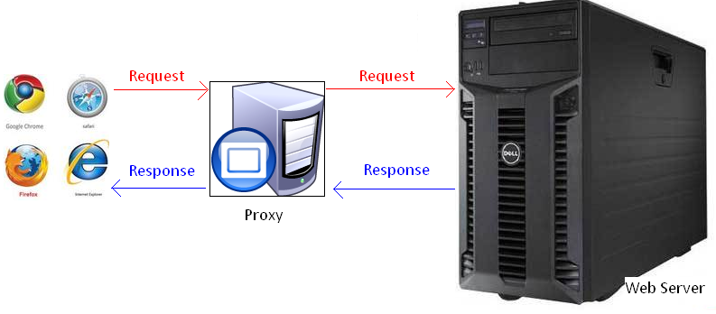
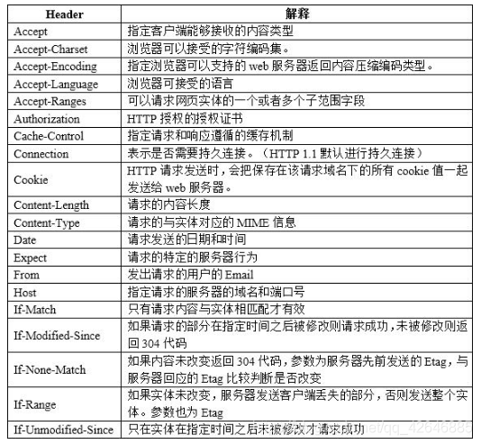
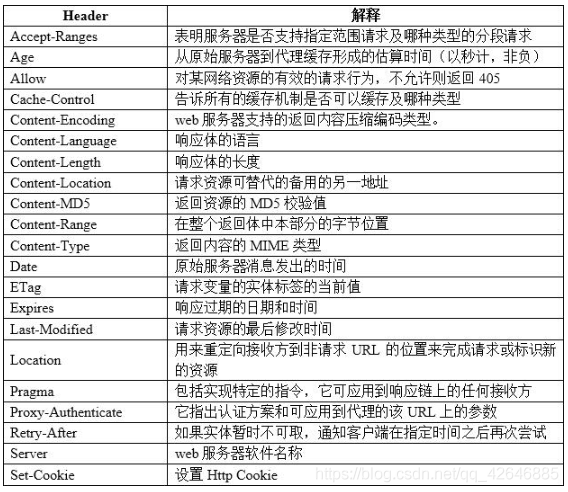
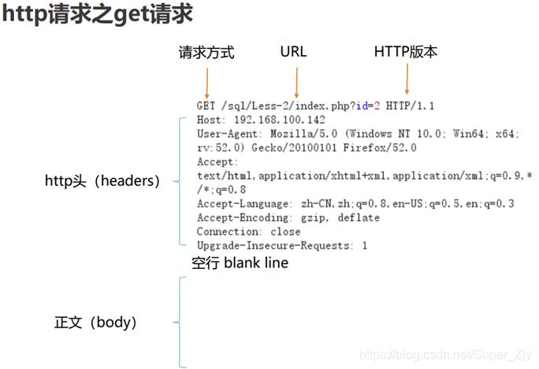
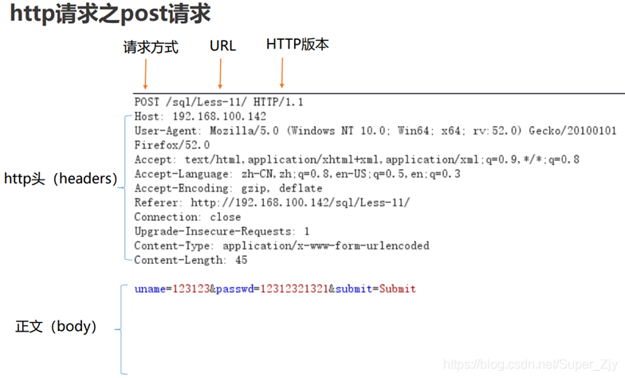

SEC学习2023版-0014
基础
参照图

Request：

Response：



数据-方法&头部&状态码
方法
1、常规请求-Get
2、用户登录-Post
所以请求方法：
•get： 向特定资源发出请求（请求指定页面信息，并返回实体主体）；
•post： 向指定资源提交数据进行处理请求（提交表单、上传文件），又可能导致新的资源的建立或原有资源的修改；
•head： 与服务器索与get请求一致的相应，响应体不会返回，获取包含在小消息头中的原信息（与get请求类似，返回的响应中没有具体内容，用于获取报头）；
•put： 向指定资源位置上上传其最新内容（从客户端向服务器传送的数据取代指定文档的内容），与post的区别是put为幂等，post为非幂等；
•trace： 回显服务器收到的请求，用于测试和诊断。trace是http8种请求方式之中最安全的l
•delete： 请求服务器删除request-URL所标示的资源*（请求服务器删除页面）
•option： 返回服务器针对特定资源所支持的HTML请求方法 或web服务器发送*测试服务器功能（允许客户 端查看服务器性能）；
•connect ： HTTP/1.1协议中能够将连接改为管道方式的代理服务器
演示：
1、UA头-设备平台
同类型同平台数据包务必保持一致，否则可能出现打不开的情况。=>UA一致性
2、Cookie-身份替换
拿到cookie身份认证，可以登录别人的账号。
安全测试时 ：
电脑访问APP和模拟器访问APP数据包有所不同，必须要符合特定的规则和语法才能访问到正确的数据包.
如果测试场景是后台，保持登录状态才能测试。登不进去就没法测了。
Response状态码
1、数据是否正常
2、文件是否存在
3、地址自动跳转
4、服务提供错误
注：容错处理识别
请求的状态 ：
•1xx:指示信息—表示请求已接收，继续处理。
•2xx:成功—表示请求已经被成功接收、理解、接受。
•3xx:重定向—要完成请求必须进行更进一步的操作。
•4xx:客户端错误—请求有语法错误或请求无法实现。
•5xx:服务器端错误—服务器未能实现合法的请求。
•200 OK：客户端请求成功
•301 redirect：页面永久性移走，服务器进行重定向跳转；
•302 redirect：页面暂时性移走，服务器进行重定向跳转，具有被劫持的安全风险；
•400 BadRequest：由于客户端请求有语法错误，不能被服务器所理解；
•401 Unauthonzed：请求未经授权。
•403 Forbidden：服务器收到请求，但是拒绝提供服务。
•404 NotFound：请求的资源不存在，例如，输入了错误的URL；
•500 InternalServerError：服务器发生不可预期的错误，无法完成客户端的请求；
•503 ServiceUnavailable：服务器当前不能够处理客户端的请求
文件判断方法：
200 文件存在
404 文件不存在
403 文件夹存在
500 可能存在或不存在 -> 可能是服务器有问题
3xx 可能存在或不存在 -> 重定向，访问时自动跳转(容错处理)
案例-文件探针&登录爆破
实验：
1、页面正常访问
2、网站文件探针
3、后台登录爆破
思考 ：
- 如果没有类似于《御剑后台扫描》的工具，可以使用Burp+字典的形式进行域名爆破.
说白了，就是Burp狙击手模式，不断瞄准域名的位置进行替换，看返回的状态码确定指定的网站目录或者文件是否存在。- 狙击手模式：如果需要传入默认经过md5加密的密码，可以使用PayloadProcessing(有效负载处理)来设置。
数据包经常使用(比较好玩)
工具-Postman自构造使用
Postman：自编写和构造数据包的工具。
其实和bp差不多，就是Postman的UI好看点。相对于bp抓包功能略全些。
网站测不出来： |
ChatGPT
ChatGPT是什么?
ChatGPT–可能很多人被这个缩写的名字搞糊涂了，第一眼无法看出到底什么意思，GPT 的英文原文是 Generative Pre-training Transformer（预训练生成模型），业界有人将 ChatGPT 概括为聊天机器人+搜索工具+文本创造工具的组合，或者简单理解它是一个生成式 AI（内容生成器）。
ChatGPT能做什么？
它的主要功能是协助回答问题、提供信息和生成有关历史、科学、地理等各种主题的信息，这些信息仅限于它所接受的训练，但其知识在不断扩展。
ChatGPT牛在哪里？
- 它是个通用的模型，只要提示词引导，就能快速适应不同领域。
- 它能理解你的问题，只要给的引导越多，它就能给出你想要的答案。
安全行业影响：
- 整合多种恶意软件
- 提升漏洞发现能力
- 给新手攻击者赋能
- 便于社会工程学攻击
- 快速筛选和锁定目标
- 模拟网络防御攻击技术
本博客所有文章除特别声明外，均采用 CC BY-NC-SA 4.0 许可协议。转载请注明来自 矢幽武博客！
 wechat
wechat alipay
alipay
相关推荐


评论
公告
威 武 不 屈 ,成 为 自 己 不败的 信条, 剑 走 偏 锋 ,缥 缈 孤 鸿 影 --孤志

微信号：无
QQ：无
--------------------------------每日更新指南：
刷题/记录总知识一般会沿用上次的文档
学习新知将新开文档